Některé lze ovlivnit velmi snadno – složení potravy a nápojů (především přítomnost cukrů), doba vystavení působení bakterií, technika čištění a zvolené pomůcky. Další faktory jsou obtížně ovlivnitelné – tvar a postavení zubů, kvalita a kvantita slin, obsah enzymů, množství kazotvorných mikroorganizmů, pohlaví, věk atd.
Pravidelným a správným čištěním zubů lze kompenzovat i genetické dispozice. Obecně však platí, že čím méně potravy nám ulpí na zubech, tím je menší pravděpodobnost vzniku zubního kazu.
Pokud ve vašem případě zjistíme sklon ke zvýšené kazivosti zubů, stanovíme míru rizika, zavedeme dietetická opatření a doporučíme remineralizační prostředky. A pokud se budete i vy v domácím prostředí důsledně starat o svůj chrup, pravděpodobnost vzniku zubního kazu snížíme na minimum.
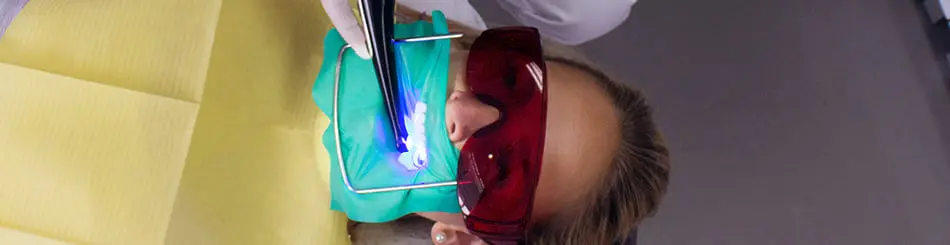
Minimálně invazivní stomatologie
Hlavní myšlenkou minimálně invazivní stomatologie je ochrana a podpora zdravých tvrdých tkání, zhojení (remineralizace) zubů zasažených zubním kazem a ochrana zbývajících nepostižených zubů. Počáteční a velmi malé kazy jsme schopni detekovat v rámci pravidelných preventivních prohlídek (pomocí rentgenu, mikroskopu či transluminace) a následně vyřešit remineralizačními prostředky. Pokud již zubní kaz postoupil do hlubších vrstev, je potřeba kompletně odstranit bakteriemi kontaminovanou zubní hmotu.
K zásadám minimálně invazivní stomatologie patří také co nejmenší a nejjemnější preparace – vrtání a broušení – zubu při odstraňování zubního kazu a minimální protetické zásahy. Proto v naší zubní ordinaci odstraňujeme zubní kaz v lokální anestesii pomocí mikrovrtáčků pod mikroskopem s patřičným zvětšením. Naší prioritou je selektivně vyčistit pouze nezbytně nutnou část zubu a zbytek ponechat k remineralizaci. Tímto postupem je zajištěna maximální šetrnost a zachování funkčnosti zubu na maximální možnou dobu. Po ukončení léčby používáme podle potřeby noční chrániče zubů tzv. nightguard. Nejen že eliminují noční skřípání zubů, ale navíc fungují skvěle i jako prevence před přirozenou abrazí (obrušování zubních plošek). Takto chráněný chrup vykazuje během let menší výskyt opotřebení a s ním spojených komplikací (snížení skusu, klínové defekty, mrtvé zuby, fazety na předních zubech, korunky na zadních zubech atd.).
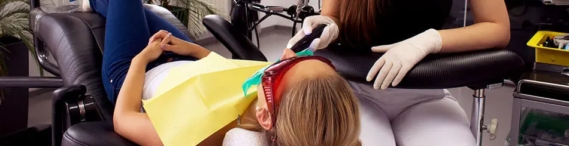
Estetické výplně a “neviditelné plomby”
Výplňový materiál volíme podle velikosti defektu, jeho umístění, vztahu ke dřeni a celkové prognóze zubu. Díky vývoji v biomedicinském výzkumu mají dnešní materiály ideální mechanické a estetické vlastnosti – jsou dostatečně tvrdé, odolné, barevně stálé, leštitelné a ještě k tomu plní estetickou funkci. Materiály, ze kterých zhotovujeme tzv. neviditelné výplně, mají lepší adhezi (přilnavost) a díky tomu jsme schopni docílit mnohem lepšího spojení mezi výplní, sklovinou a dentinem (zubovina). Můžeme tak pracovat s minimální zátěží pro konkrétní zub a tím maximálně šetřit jeho zdravé struktury.
Naproti tomu stojí zastaralá amalgámová výplň, která nemá chemickou vazbu k zubu. Při její přípravě je proto nutné být více razantní, tzn. odvrtat i zdravé zubní tkáně, aby se výplň v zubu “zasekla” a držela. Tím je zub oslaben. Při sekundárním ošetřování zubů jsou pod amalgámovou výplní většinou mikropraskliny, které mohou vést až k fraktuře a ztrátě zubu. Najdou se však výjimečné případy, kdy nelze použít šetrnou výplň. V tom případě zub ošetříme podle klasického protokolu (anestezie, kofferdam, karies detektor, desinfekce) a uzavřeme amalgámem.
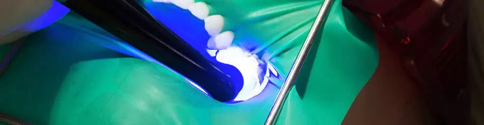
Co je kofferdam?
V 99 % případů provádíme ošetření za pomoci kofferdamu. Jedná se o izolační blánu, která bezpečně odděluje pracovní pole, zajišťuje odplav bakterií, chrání před polykáním a vdechováním rtuti z odvrtávaného amalgámua kazotvorných bakterií, jemně odtahuje jazyk a tvář pacienta, napomáhá při otevírání úst, čímž ulevuje čelistnímu kloubu, umožňuje kvalitní odsávání a lékař může pracovat v absolutně suchém poli. A vyšší komfort během ošetření poskytuje i pacientům. Někteří dokonce díky kofferdamu ošetření prospí.
Co je karies detektor?
Karies detektor je tekutina, která obarví zubní kaz. My tak spolehlivě poznáme, kam až kaz zasahuje. Nestane se tak, že bychom zbytečně odvrtali zdravou zubní tkáň, nebo neodstranili celý kaz.
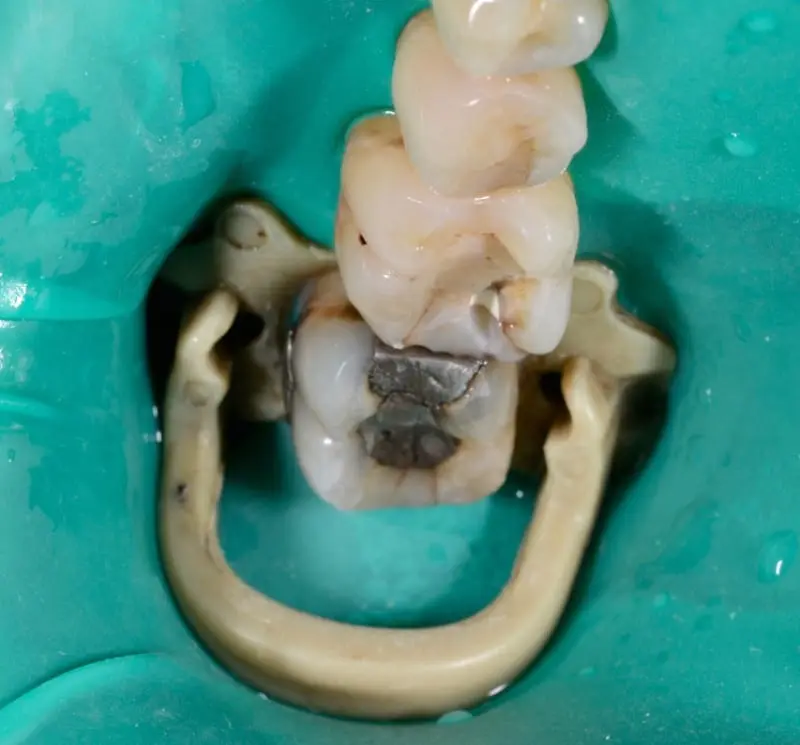
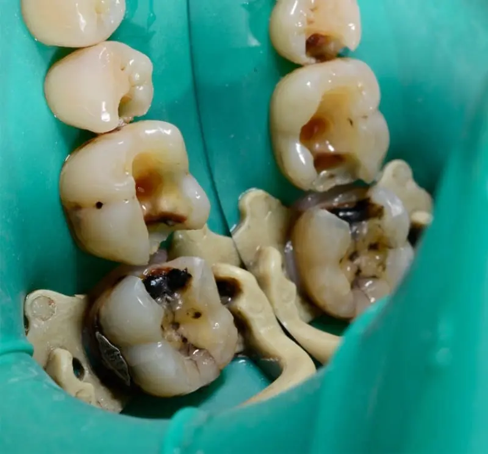
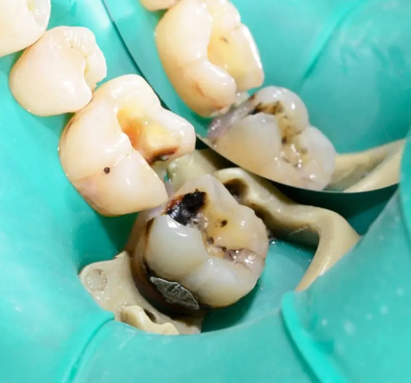
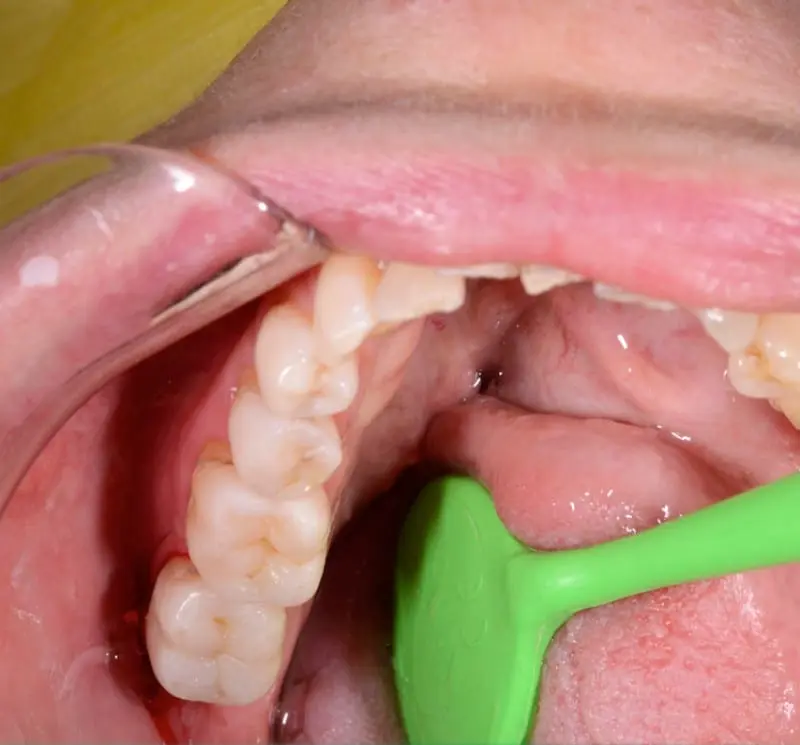
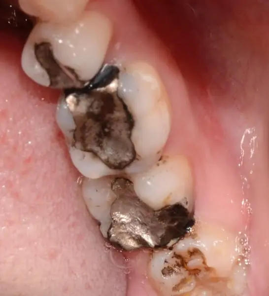
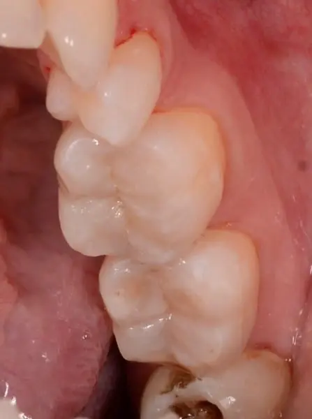
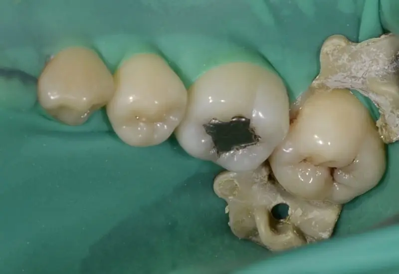
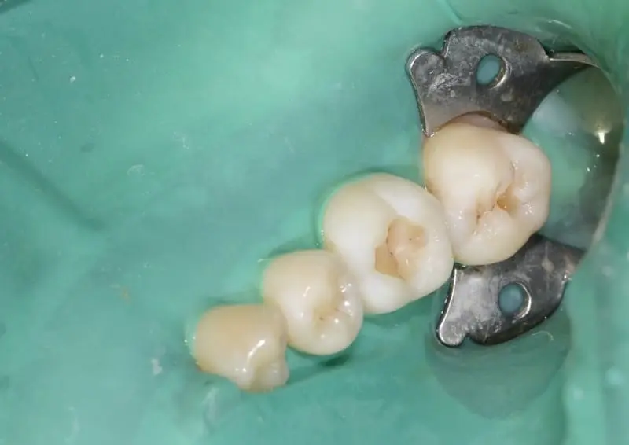
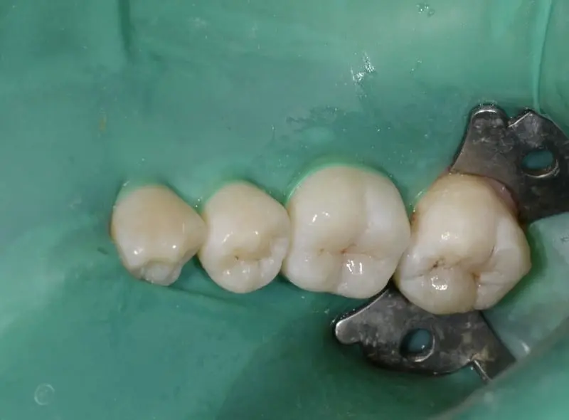
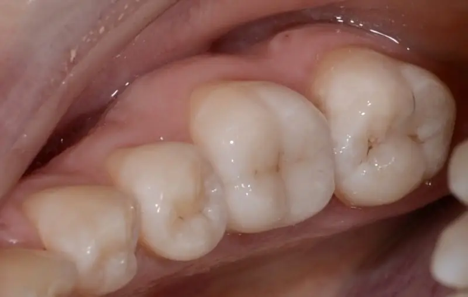
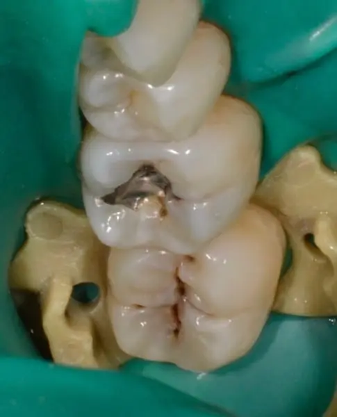
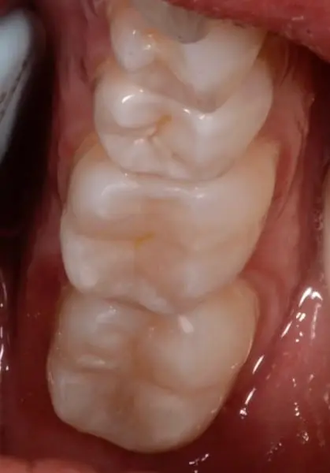
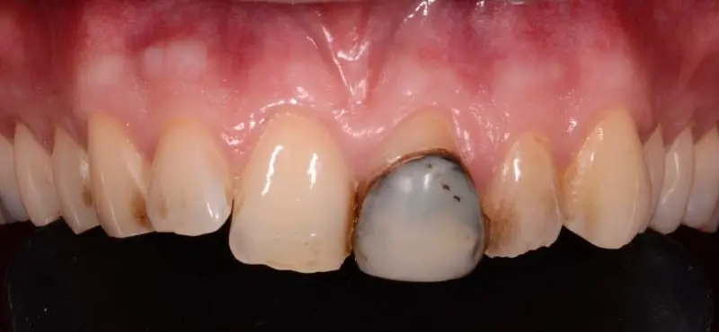
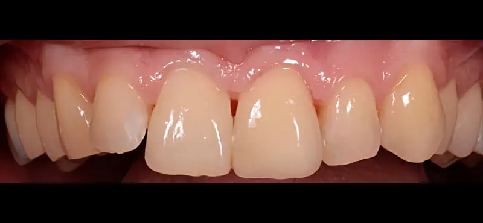
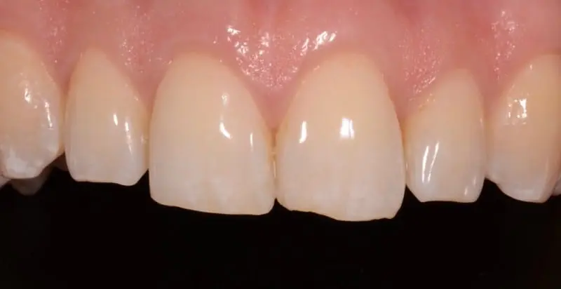
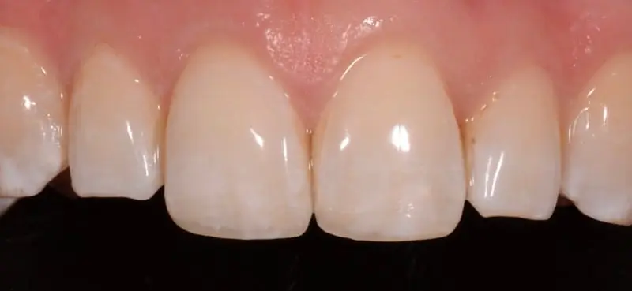
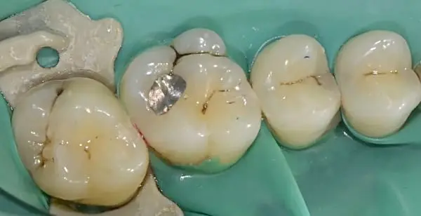
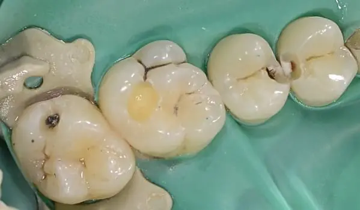
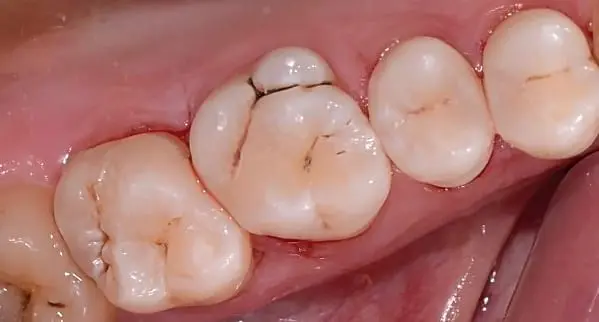
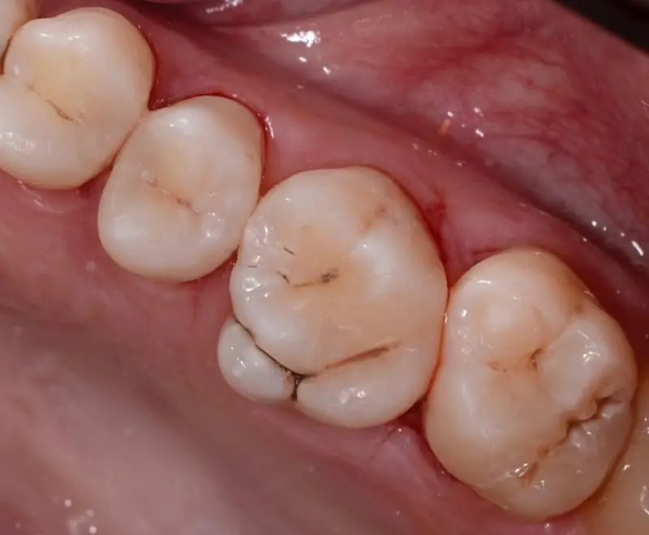